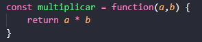
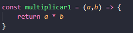

Utilizada para quando não deseja nomear uma função, e sim definir uma variável const para guardar a função. Não é muito utilizado. A forma mais usual é nomear as funções para fins de entendimento e controle.
Utiliza-se o sinal => para indicar que é uma função, não sendo necessário escrever a palavra function. Perceba que os argumentos são descritos antes da arrow.
